Chapter 5 Setting up your project
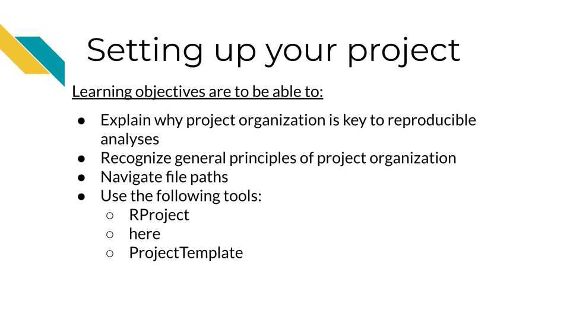
5.1 Understand why project organization is key to reproducible analyses
Keeping your files organized is a skill that has a high long-term payoff. As you are in the thick of an analysis, you may underestimate how many files and terms you have floating around. But a short time later, you may return to your files and realize your organization was not as clear as you hoped.
(Tayo2019?) discusses four particular reasons why it is important to organize your project:
- Organization increases productivity. If a project is well organized, with everything placed in one directory, it makes it easier to avoid wasting time searching for project files such as datasets, codes, output files, and so on.
- A well-organized project helps you to keep and maintain a record of your ongoing and completed data science projects.
- Completed data science projects could be used for building future models. If you have to solve a similar problem in the future, you can use the same code with slight modifications.
- A well-organized project can easily be understood by other data science professionals when shared on platforms such as Github.
Organization is yet another aspect of reproducibility that saves you and your colleagues time!
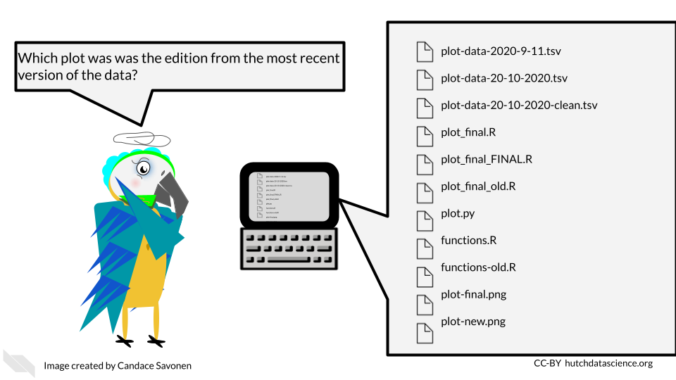
5.2 General principles of project organization
Project organization should work for you and not the other way around. The goal should be organization that is maintainable long term. As you might imagine, the optimal organizational scheme might differ from one individual to another or even one project to another.
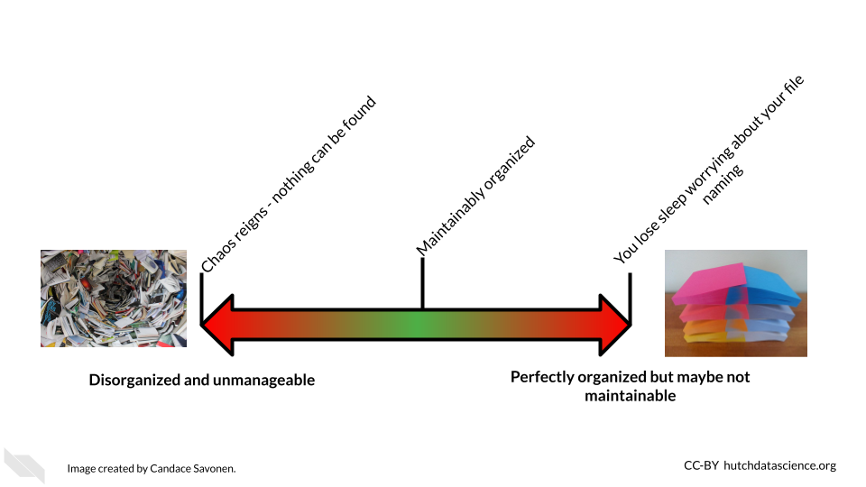
There’s a lot of ways to keep your files organized, and there’s not a “one size fits all” organizational solution (Shapiro2021?). In this chapter, we will discuss some generalities; but for specifics, we will point you to others who have written about what works for them. We suggest that you use them as inspiration to figure out a strategy that works for you and your team.
The most important aspects of your project organization scheme is that it:
- Is project-oriented (Bryan2017?).
- Follows consistent patterns (Shapiro2021?).
- Is easy for you and others to find the files you need quickly (Shapiro2021?).
- Minimizes the likelihood for errors (like writing over files accidentally) (Shapiro2021?).
- Is something maintainable (Shapiro2021?)!
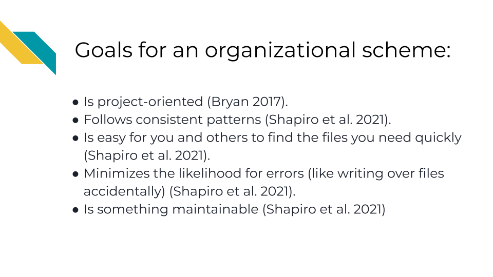
5.2.1 READMEs!
READMEs are also a great way to help your collaborators get quickly acquainted with the project.
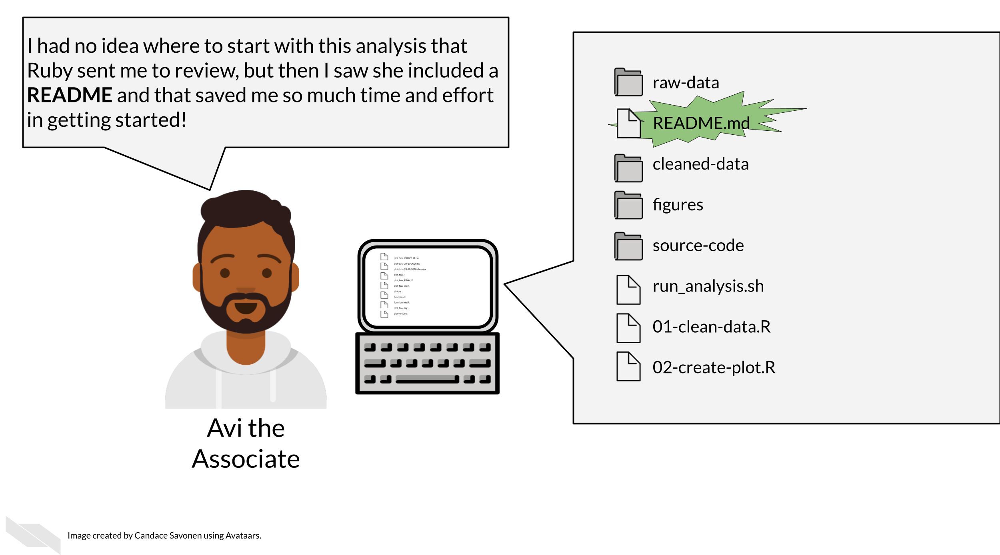
READMEs stick out in a project and are generally universal signal for new people to the project to start by READing them. GitHub automatically will preview your file called “README.md” when someone comes to the main page of your repository. This further encourages people looking at your project to read the information in your README.
Information that should be included in a README:
- General purpose of the project
- Instructions on how to re-run the project
- Lists of any software required by the project
- Input and output file descriptions
- Descriptions of any additional tools included in the project
- License for how your materials should be used You can take a look at this template README to get your started.
5.2.1.3 Licensing
Adding information about a license is not always required, but it can be a good idea. If you put your code on GitHub, then the default copyright laws apply. According to GitHub:
“You retain all rights to your source code and no one may reproduce, distribute, or create derivative works from your work. If you’re creating an open source project, we strongly encourage you to include an open source license.”
Open source software or code means that it is distributed with a license that allows others to reuse or adapt your code for other purposes. This is very helpful to advance science and technology.
Check out this great resource on options for licenses to help you choose which license is right for your project. ### Example organization scheme
Getting more specific, here’s some ideas of how to organize your project:
- Make file names informative to those who don’t have knowledge of the project – but avoid using spaces, quotes, or unusual characters in your filenames and folders, as these can make reading in files a nightmare with some programs.
- Number scripts in the order that they are run.
- Keep like-files together in their own directory: results tables with other results tables, etc. Including most importantly keeping raw data separate from processed data or other results!
- Put source scripts and functions in their own directory. Things that should never need to be called directly by yourself or anyone else.
- Put output in its own directories like
resultsandplots. - Have a central document (like a README) that describes the basic information about the analysis and how to re-run it.
- Make it easy on yourself, dates aren’t necessary to track for file updates. The computer keeps track of when a file was updated.
- Make a central script that re-runs everything – including the creation of the folders! (more on this in a later chapter)
Let’s see what these principles might look in practice.
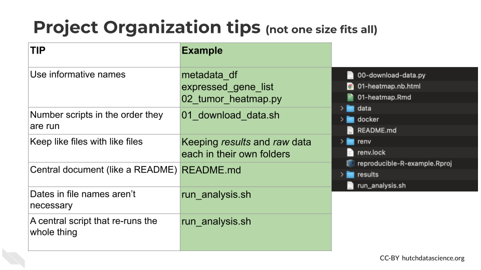
Here’s an example of what this might look like:
project-name/
├── run_analysis.sh
├── 00-download-data.sh
├── 01-make-heatmap.Rmd
├── README.md
├── plots/
│ └── project-name-heatmap.png
├── results/
│ └── top_gene_results.tsv
├── raw-data/
│ ├── project-name-raw.tsv
│ └── project-name-metadata.tsv
├── processed-data/
│ ├── project-name-quantile-normalized.tsv
└── util/
├── plotting-functions.R
└── data-wrangling-functions.RWhat these hypothetical files and folders contain:
run_analysis.sh- A central script that runs everything00-download-data.sh- The script that needs to be run first and is called by run_analysis.sh01-make-heatmap.Rmd- The script that needs to be run second and is also called by run_analysis.shREADME.md- The document that has the information that will orient someone to this projectplots- A folder of plots and resulting imagesresults- A folder of resultsraw-data- Data files as they first arrive and nothing has been done to them yetprocessed-data- Data that has been modified from the raw in some wayutil- A folder of utilities that never needs to be called or touched directly unless troubleshooting something
There are lots of ideas out there for organizational strategies. The key is finding one that fits your team and your project. You can read through some of these articles to think about what kind of organizational strategy might work for you and your team:
- Reproducible R example
- Jenny Bryan’s organizational strategies (Bryan2021?).
- Danielle Navarro’s organizational strategies (Navarro2021?)
- Data Carpentry mini-course about organizing projects (DataCarpentry2021?).
- Andrew Severin’s strategy for organization (Severin2021?).
- A BioStars thread where many individuals share their own organizational strategies (Biostars2021?).
- Data Carpentry course chapter about getting organized (DataCarpentry2019?).
5.4 Handy R Tools
5.4.1 R Project files
RStudio comes with a nifty feature for organizing your files and making file paths easier for collaborating (more on that in the next section), called R projects.
When you create an R project, which can be made by clicking on the button in the upper left corner of R Studio that looks like a blue cube with the R logo inside of it, you add a .Rproj file to your working directory.
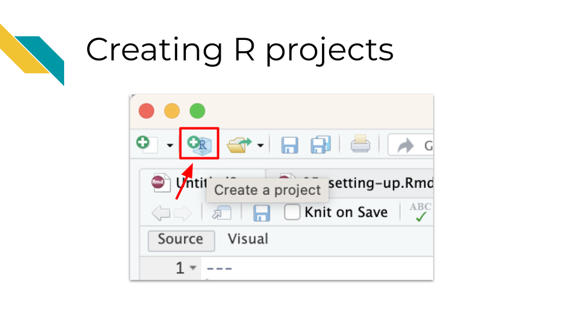
This .Rproj file not only helps us later with file paths, but it also saves settings so that our work can be more efficient. Each time we open the project, (by clicking on the project file or using RStudio file tab, “Open project…” option), a few things will happen:
- We will load the files we were last working on in the editor pane
- Our current directory will shift to the directory containing the
.Rprojfile - Settings for how we have set up RStudio will be restored
This can also make it really nice to switch from working on one project to another. You can click on the upper right button that has the R project icon in RStudio to switch to other recent projects.
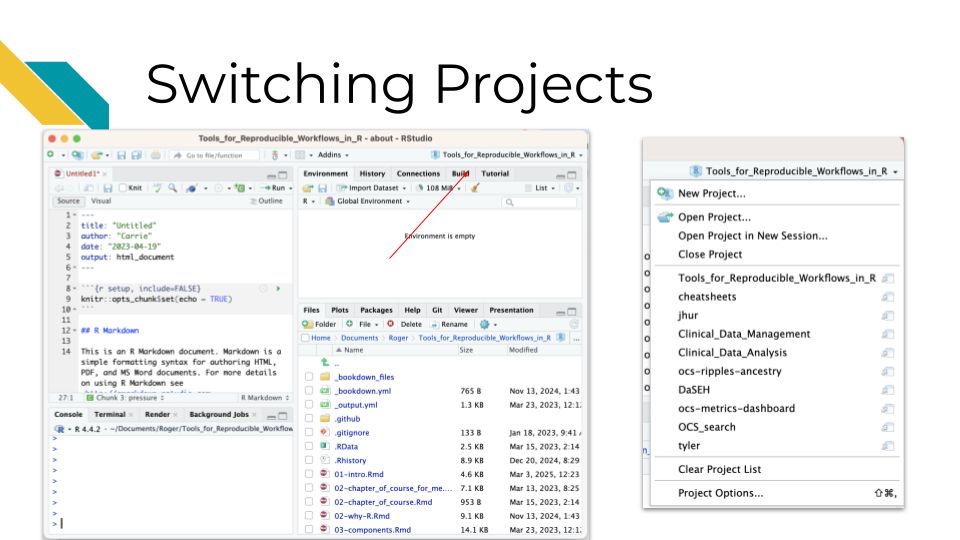
It also makes it much easier to navigate your files more efficiently. There is a project directory button in the file pane that allows you to quickly return to the directory with the .Rproj file for the project that you currently have open, if you happen to navigate away from that directory.
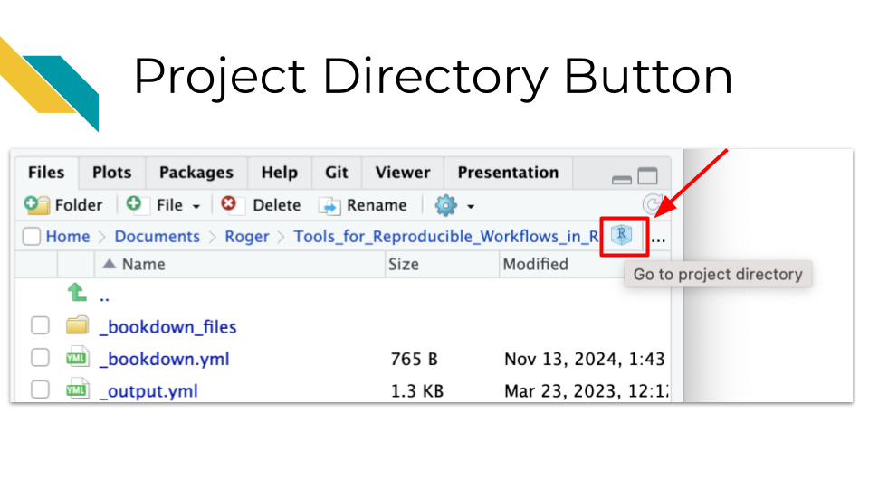
5.4.2 The here package
The here package is very useful for helping you set up file paths in a way that can make it easier for others to use your code.
Jenny Bryan who works for RStudio is famous in the R community for having strong feelings about this:
The only two things that make (JennyBryan?) 😤😠🤯. Instead use projects + here::here() #rstats pic.twitter.com/GwxnHePL4n
— Hadley Wickham ((hadleywickham?)) December 11, 2017
The reason for Jenny’s anger is that if you write file that starts with your own personal path on your computer, that requires that anyone else who receives the file to adjust the path for their computer.
The here package fixes this problem. Instead you can write a path relative to the .Rproj file. Then if you send your project files to someone, the paths will work for them too! (This is as long as they don’t move the files around without updating the code.)
One can do then use the here package to load data with just the relative path from the .Rproj file.
For example, let’s say we had our files organized like we did before, but now we have a .Rproj file called myproj.Rproj.
project-name/
├── run_analysis.sh
├── 00-download-data.sh
├── 01-make-heatmap.Rmd
├── myproj.Rproj
├── README.md
├── plots/
│ └── project-name-heatmap.png
├── results/
│ └── top_gene_results.tsv
├── raw-data/
│ ├── project-name-raw.tsv
│ └── project-name-metadata.tsv
├── processed-data/
│ ├── project-name-quantile-normalized.tsv
└── util/
├── plotting-functions.R
└── data-wrangling-functions.RIf we wanted to use data from the project-name-quantile-normalized.tsv file in our processed-data directory to make a plot, then we could use the following code:
library(here)
library(tidyverse)
my_data <- read_delim(here("processed-data/project-name-quantile-normalized.tsv"))In this code we are loading the here package and the tidyverse package (assuming that we have already installed these packages using the install.packages() command).
We then import data from the file called project-name-quantile-normalized.tsv inside of the processed-data directory using the path of this data file relative to the .Rproj file. This is because the here function tells RStudio to start looking in the directory with the .Rproj file.
Now if someone were to send all the project files to someone else, they could run this code without any adjustments!
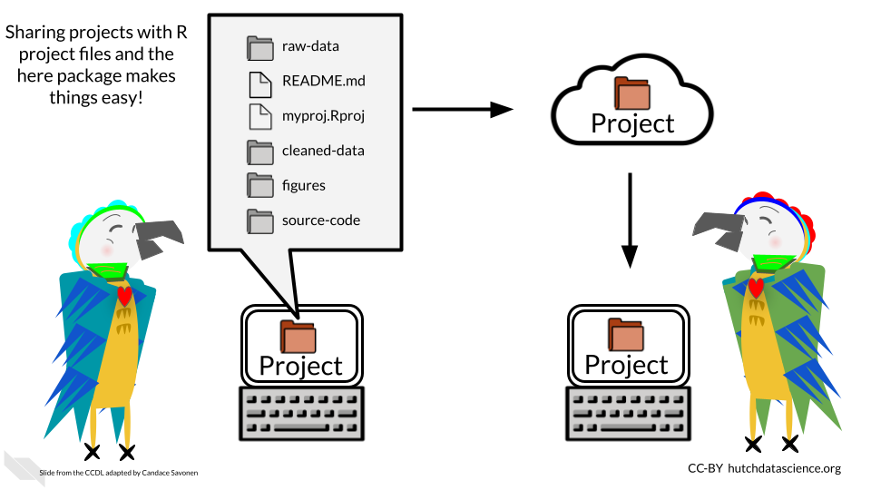
Checkout more of Jenny’s thoughts on organizing files, paths, and projects in R(Bryan2017?).
Also checkout this course which talks about RStudio projects and the here package(Carrie Wright n.d.).
5.4.3 ProjectTemplate
If you are interested in doing more advanced project organization and automatic running of code and testing, you could consider using the ProjectTemplate package.
This is not to be confused with R projects, you would still need to create an R project using this package, or you can specify using commands with this package to also create an R project.
However, using ProjectTemplate will create a directory structure to help you stay organized.
Running the create.project() command in the console of RStudio will create a new directory called new_project with many subdirectories such as data and graphs, and it will create a README file. You can read more about the file structure that it creates.
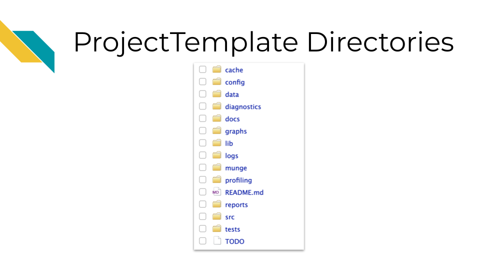
If you also add a rstudio.project = TRUE, this will create a new RStudio project as well.
You can use this package to help you create consistent directory structures across projects and to help you not forget to make README files.
You can also customize this structure as well using the create.template function.
5.4.4 Scientific notebooks (Rmd or qmd)
Using notebooks can be a very helpful tool for documenting the development of an analysis.
Data analyses can lead one on a winding trail of decisions and side investigations, but notebooks allow you to narrate your thought process as you travel along these analyses explorations!

Your scientific notebook should include descriptions that describe:
5.4.4.1 The purposes of the notebook
It can be helpful to others and your future self to describe:
- The scientific question are you trying to answer
- The dataset you are using to try to answer this question
- An explanation for the choice of the dataset to help answer this question
5.4.4.2 The rationales behind your decisions
Describe major code decisions. For example, why you chose to use specific packages or why you took certain steps in that specific order. This can be very general to very specific, such as why a particular code chunk is doing a particular thing. The more possible options there were for choices or the more unusual a process that you might have taken, the greater the need to describe why you made certain decisions.
Describe any particular filters or cutoffs you are using and how did you decided on those.
For data wrangling steps, describe why you are wrangling the data in such a way. Is this because a certain package you are using requires it?
5.4.4.3 Your observations of the results
In this section it is helpful to include:
- What do you currently think about the results?
- What do you think about the plots and tables you show in the notebook – how do they inform your original questions?
There are two major types of notebooks folks use in the R programming language: R Markdown files and Quarto files. In the next section we will discuss these notebooks, the similarities and differences between these two options, and how to use them.